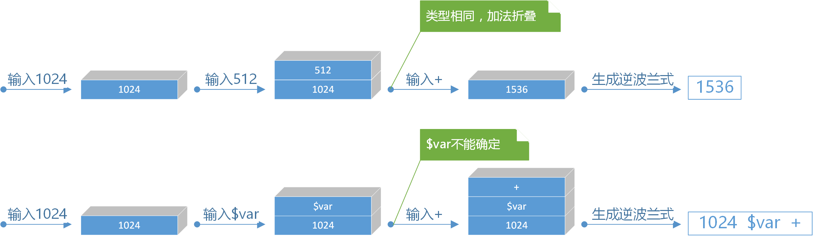

语义分析和代码优化
经过语法分析，每一个行命令会生成一棵符合文法的语法分析树，接下来进行语法制导的翻译，目的是生成该语法树对应的机器无关的中间代码Yuri-IL。
在此过程中，语义分析器将首先根据每一棵语法分析树的根节点类型来确定要翻译成中间代码的指令码，并构造一个数据结构来包装这个指令和它的参数，记这个数据结构名称为动作包装SceneAction。随后，对语法分析树的根节点的参数字典中的所有参数值表达式所对应的子树去递归遍历语法树，填充待定属性的值。通过LL(1)文法的规则，将抽象语法树的表达式转换为逆波兰表达式。由于运行时环境是由一个栈机来维护的，逆波兰式在运行时环境虚拟机中的计算比使用AST更高效和方便。之后，语义分析器还会进行代码优化动作：控制流程的优化，标签的回填，以及参数值逆波兰式的常数折叠。
在递归遍历语法树的过程中，采用LL(1)文法的规则来构造逆波兰式。语法分析阶段表达式dash=1024+512的值表达式是以AST树作为储存数据结构。记+节点为A，1024数字节点为B，512数字节点为C，在语义分析阶段，根据文法规则，节点A的逆波兰式将递归地由节点B和节点C的逆波兰式组合得到，形如：
A.polish = B.polish + splitor + C.polish + splitor + "+"
其中splitor表示在逆波兰表达式中分割两个项目的分隔符，可以用空格表示。更复杂的表达式同样以这种规则递归地用子节点的逆波兰式来构造自身的逆波兰式，在完成递归遍历动作后，根节点的逆波兰式就是该属性值表达式的等价逆波兰式。在动作包装的参数字典中，不再以<参数名，参数值表达式语法解析树>作为字典键值对，而使用<参数名，参数值表达式的逆波兰式>来表示。在值表达式文法相对复杂的情况下，这种储存方式将很大程度上减小参数字典的尺寸。
与此同时，回填也在递归遍历语法分析树构造动作包装的过程中完成。为控制流语句生成目标代码时，关键问题之一是将一个跳转指令和该跳转指令的目标匹配起来，回填技术将处理Yuriri脚本中的流程控制语句和跳转语句，处理这些指令的下一指令指针指向所期待的位置。在这个阶段，死代码消除也会被执行。
在完成逆波兰式的构造和回填后，语义分析器会调用优化器对逆波兰式进行常数折叠。出于编码便捷的考虑，Yuriri脚本是一种弱类型的脚本语言，它只有数字和字符串两种数据类型，并且变量不需要做声明动作。这带来在常数折叠的过程中需要考虑操作符的两边的类型是否可以折叠，例如，一个数字和一个字符串之间使用了减号操作符是不合法的，编译器应该抛出错误。因此，Yuri Engine的类型检查机制被推后到运行时。
继续考虑编译时中的常数折叠的过程，折叠动作的本质是利用栈数据结构来合并表达式。对于常数和变量名项目，直接入栈；对操作符，先判断操作符是几目操作符，再确定栈中是否有足够的操作数。操作数合法的情况下，取出操作数进行折叠并放回栈中。由于编译时有不能确定值的变量，导致一趟折叠完毕后栈中项目计数大于1，因此常数折叠的结果可能还是一个带操作符的逆波兰式。下图展示了这两种常数折叠的过程。

在编译过程中，语义分析和代码优化都由语义分析器Yuri.YuriInterpreter.Pile类来承担。对于输入的Yuriri脚本文件集合，语义分析器Pile将每个文件做行分割，按行作为词法分析器的输入，在词法分析器返回行的Token流之后，调用语法分析器调用其Semanticer方法做语法分析得到行的语法树。语义分析器Pile会将同一作用域，即在同一条死代码检测路径上的语法树规约到一个共同的根节点上，根据返回节点是否为控制流程，是否嵌套等因素处理语法树的层次关系，保证最终每个命令语句能得到一棵逻辑正确的变体语法分析树。
得到目的语法分析树后，语义分析器Pile将调用其AST方法对语法树做抽象语法树递归遍历，将这棵语法树转化为等价的动作包装序列，在剔除掉大量冗余的LL(1)推导中间项的同时，调用ConstructArgPolish方法将每个节点的属性值语法分析树转化为等价的逆波兰式。随后，BackpatchOptimizer方法将第二次递归遍历动作序列，进行回填、常数折叠和死代码消除，并将这些动作序列组装成场景包装。最后调用ILGenerator方法，它会递归调用每一个动作序列中的动作项的GetIL接口来获得对应的Yuri-IL机器无关中间代码的字符串，并组合成一个IL文件返回给编译总控制器Interpreter，最后交由不同平台上的游戏虚拟机去解释执行。